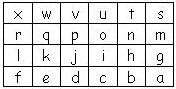
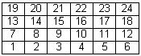

Objetivo:
- Que apliques los conocimientos adquiridos en el semestre.
- Que ejercites la habilidad de hacer frente a los mensajes de error
que envía la herramienta de desarrollo.

Forma de trabajo:
Actividad individual
 Instrucciones:
Instrucciones:
- Analiza cada uno de los
ejercicios que se presentan a continuación.
- Identifica cuál sería
la solución y desarrolla el programa completo en C para cada uno de
los ejercicios.
Ejercicio 1
El
procedimiento
llenaMatrizCaracteres, que recibe
como parámetro una matriz de caracteres de 4 renglones por 6
columnas; y almacena en cada una de las localidades de la matriz una
letra consecutiva de la 'a' hasta la 'x' iniciando en la localidad
3,5.
Es decir, después de llamar al procedimiento llenaMatrizCaracteres,
en la matriz deberán estar los siguientes valores:

#define ren 4
#define col 6
char M[ren][col]; // Declaración de una matriz de caracteres
M[0][0] = 97;
// Esto significa que a la posición 0,0 le asignas la letra 'a'
printf(" %c ", M[0][0]); // Imprimiría la letra a
Ejercicio 2
El procedimiento imprimeMatrizCaracteres,
que recibe como parámetros una matriz de caracteres de 4 renglones
por 6 columnas. El procedimiento desplegará en pantalla el
contenido de la matriz.
Ejercicio 3
El
procedimiento llenaMatriz, que
recibe como parámetro una matriz de enteros de 4 renglones por 6
columnas; y almacena en cada una de las localidades de la matriz un
número consecutivo del 1 al 24 iniciando en la localidad 3,0.
Es decir, después de llamar al procedimiento llenaMatriz, en la
matriz deberán estar los siguientes valores:

Ejercicio 4
El
procedimiento
imprimeMatriz, que recibe como
parámetros una matriz de enteros de 4 renglones por 6 columnas. El
procedimiento desplegará en pantalla el contenido de la matriz.
.
Tabla de valores ASCII

|